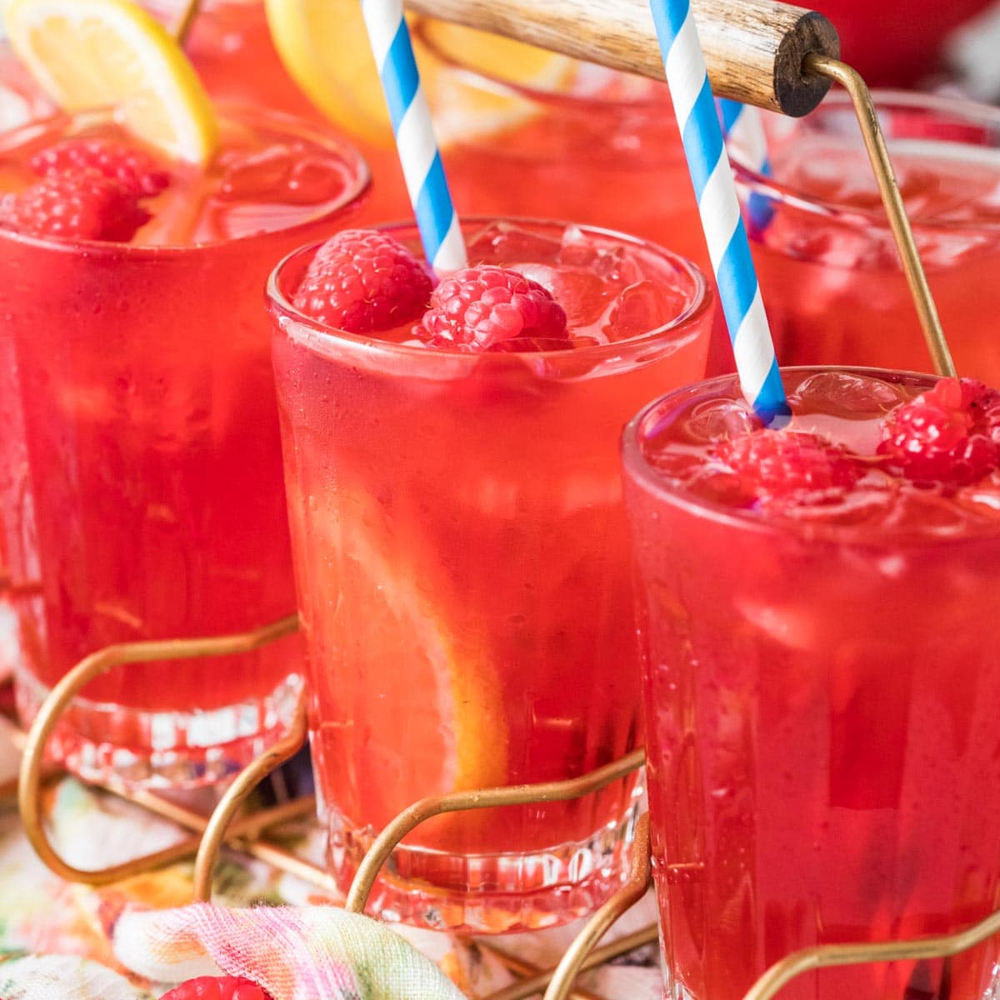

Home

Raspberry Lemonade Photo by Sugar Spun Run
About Raspberry Lemonade
Raspberry Lemonade is a simple twist on regular lemonade that just makes it a much more interesting drink.
It's the perfect summer drink you can serve to anybody and keep you hydrated through hot days.
Ingredients for Raspberry Lemonade(1 gallon)
12 oz fresh raspberries
10 fresh lemons
1 1/4 cup sugar
1 tsp salt
Tools
Food Processor
Mesh strainer/sift
Citrus Juicer
A large 1 gallon pitcher
Steps
Chop 8 lemons in halves, then juice them with the citrus juicer. This should yield 1 1/4 cups of lemon
juice.
Rinse your raspberries in the sift.
Put all raspberries in food processor, and blend until smooth.
Get a large pot on medium heat, and add 3 quarts of water.
Add in the lemon juice(including seeds and pulp) along with the blended raspberries.
Add 1 1/4 cup of sugar and 1 tsp of salt in the pot too.
Stir ingredients in pot for 8-10 minutes on medium heat.
After 8-10 minutes, turn off the heat and cover with a lid. Leave it for 30 minutes.
Get a large bowl, and use a strainer while pouring it into the bowl.
Throw out the rest of the pulp in the strainer.
Pour the raspberry lemonade into a pitcher.
You can put it in your fridge to cool it off for the next day.
Serve in a glass with some ice and fresh lemon slices and raspberries!